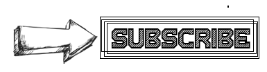

This is my cat. & Her name is Peesho. (پشو) It's looking for food.. The moment it will find food is the moment I will launch my website.. :)
drop me your email or contact & I'll notify you once site is made. :) /.oomer
